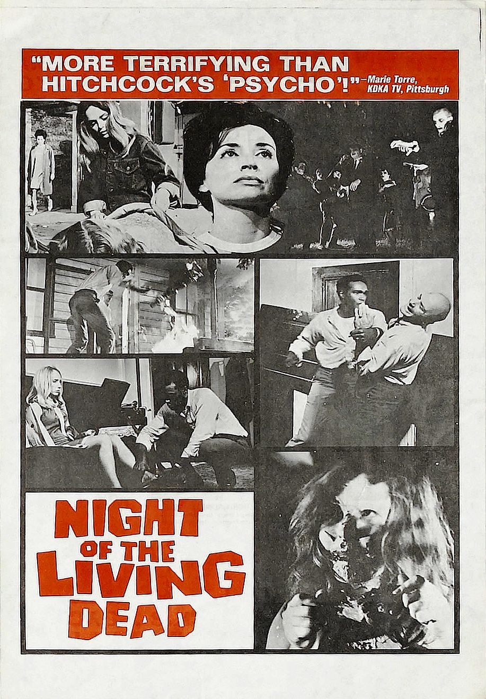

Эра телевидения и новых волн
1948 – 1975

10 самых влиятельных фильмов эры
Единого официального списка нет. Этот список составлен по общим обзорам истории кино (источники — внизу главной страницы). Фильмы идут по году выпуска.
- Расёмон (羅生門)
Акира Куросава, 1950 - Семь самураев (七人の侍)
Акира Куросава, 1954 - 400 ударов (Les Quatre Cents Coups)
Франсуа Трюффо, 1959 - На последнем дыхании (À bout de souffle)
Жан-Люк Годар, 1960 - Психо (Psycho)
Альфред Хичкок, 1960 - 8½ (Otto e mezzo)
Федерико Феллини, 1963 - Доктор Стрейнджлав (Dr. Strangelove)
Стэнли Кубрик, 1964 - 2001 год: Космическая одиссея (2001: A Space Odyssey)
Стэнли Кубрик, 1968 - Ночь живых мертвецов (Night of the Living Dead)
Джордж Ромеро, 1968 - Крёстный отец (The Godfather)
Фрэнсис Форд Коппола, 1972